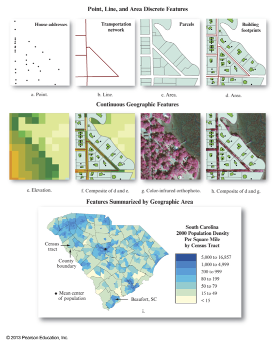
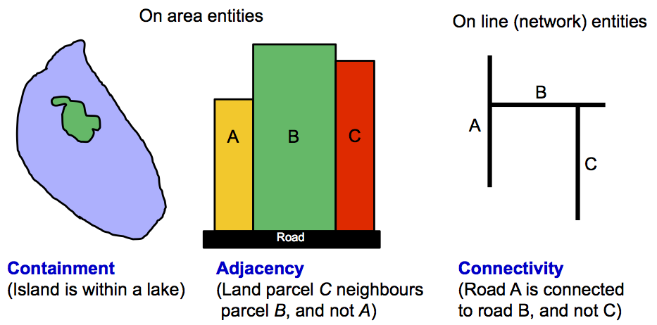
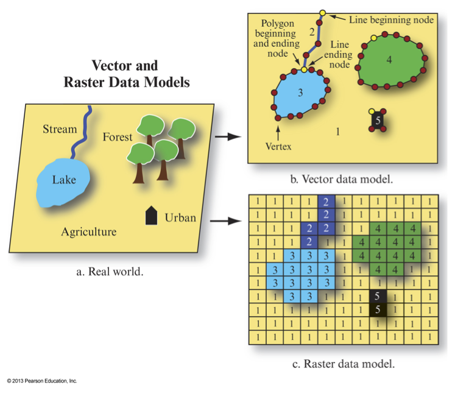

GEOG*3480
GIS and Spatial Analysis
Geospatial Data
Part 1: Spatial Data Models
John Lindsay
Fall 2015
Readings
- Jensen and Jensen Chapter 1 (pp. 4-7) and Chapter 5
GIS data...
- may be organized or analyzed by their temporal, thematic (attribute) or spatial dimensions.
- GIS most commonly organize data in a spatio-centric or an attribute-centric way
- Spatial data frequently are distributed with metadata, i.e. data about the data, e.g. the publication year, the publisher, data quality, coordinate system and projection information, etc.

Jensen and Jensen, 2013
Important Aspects of Geospatial Data
- Timeliness
- When was it collected?
- How long is it valid?
- Can it be updated?
- Scale and resolution
- Scale for spatial data: e.g. 1:10,000
- Scale for attribute data: dichotomous, nominal (categorical), ordinal, interval/ratio
Important Aspects of Geospatial Data
- Generalization and Completeness
- Spatial referencing
- Geographic versus rectangular co-ordinate systems
- Topology
Topology
- Topology is the study of those properties of geometric objects that remain invariant
under certain transformations such as bending, stretching or scaling, e.g. data are
transformed through map projections.
- Not all geospatial data explicitly stores topological info
- Including topological information in a spatial data structure can 1) ensure data quality,
and 2) enhance GIS analysis.
- Non-topological data structures are faster to display and are interoperable.
Topological Relationships

Methods for Data Input
- Attribute data
- Keyboard entry
- Importing existing files
- Geospatial data
- Importing existing files
- Remote sensing data sources
- Survey coordinates
- Global Positioning Systems (GPS)
- Digitizing
- Scanning
Geospatial Data Models
- A data model defines how spatial features are represented in a GIS.
- The vector data model uses points and their x-, y-coordinates to represent features.
- Best suited to features with a clear spatial location and boundary
- The raster data model uses a grid, composed of many individual grid cells,
to represent features.
- Best suited to continuous spatial phenomena, e.g. elevation but can also represent
discrete features.

Jensen and Jensen, 2013
Real World
↓
Apply a scale and projection
↓
Represent entities in a
raster or vector data model
↓
Translate the digital model to
machine readable form (data structure)
Which data model should I choose?
- How easy is it to input data?
- What format does my GIS software require?
- Which model requires more computer storage space?
- Which model will have better computational performance for my application?
- Do I need to reference precise coordinates?
- Am I working with continuous or discrete phenomena?
Which data model should I choose?
- Will I be working with data with "fuzzy" boundaries?
- Fisher and Wood, 1998 "What is a Mountain? Or The Englishman who went up a
Boolean Geographical Concept but Realised it was Fuzzy"
- What type of analysis will I be conducting?
- Do I require well designed cartographic output?